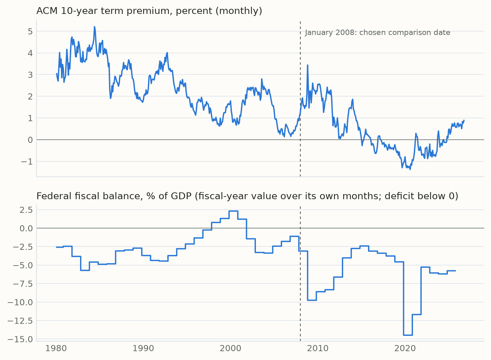
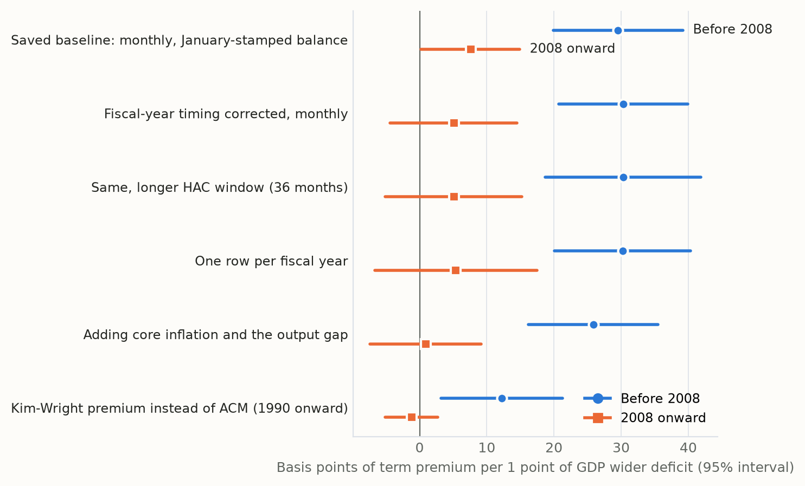
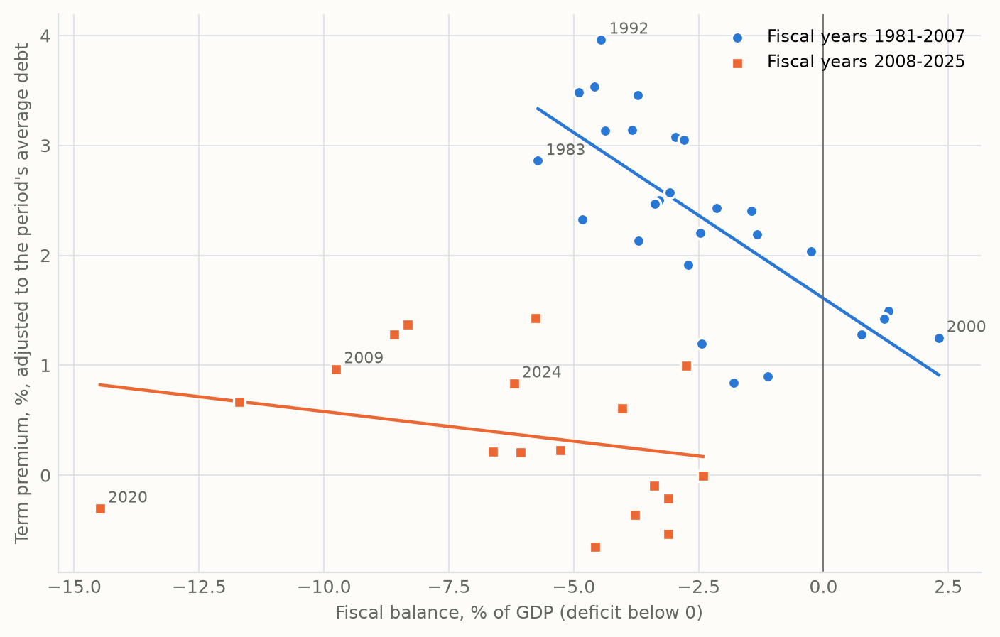
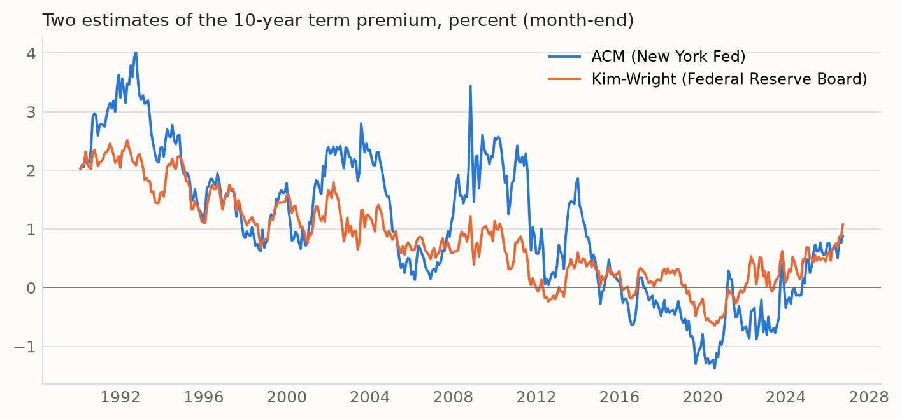

Term Premium Research Journal · Article 1
How Stable Is the Link Between Deficits and the Term Premium?
- Published
- 20 October 2026
- Observation period
- January 1980 to September 2025 for the estimates (fiscal years 1981 to 2025); the premium is shown to September 2026
- Data vintage
- New York Fed ACM file of 9 October 2026; Kim-Wright from FRED, 9 October 2026; other FRED series pulled around June 2026 (fiscal balance through fiscal 2025, GDP and debt through early 2026). All revised data, not real-time
From 1980 to 2007, a wider US deficit went with a noticeably higher 10-year term premium. Since 2008 that link has been much weaker, and in most versions I tested it cannot be told apart from zero.
In short
- Before 2008, a fiscal balance one point of GDP worse went with about 30 basis points more term premium, holding the debt level fixed.
- From 2008 on, the same association is about 5 to 8 basis points in the plain versions, and about zero with business-cycle controls or on a second premium model. Its 95% interval includes zero in five of the six versions.
- The change between the two periods is statistically clear in every version on the New York Fed's ACM estimate. On a second estimate (Kim-Wright) the link is smaller throughout, and the change is weaker when each fiscal year counts once (p = 0.07).
- This is an association, not a measured cause, and January 2008 is a date I chose to compare around, not one the data picked.
Numbers: results file and table of specifications.
The question and why it matters now
When a government borrows more, should investors ask to be paid more for lending to it for ten years? Part of a long-term yield reflects where investors expect short-term interest rates to go. The rest, the term premium, is what they ask for bearing the risk of locking money up for a long time. It is one natural place to look for fiscal risk, though not the only one.
The question feels live. The US ran a deficit of about 5.8% of GDP in fiscal 2025, and in September 2026 the ACM estimate of the 10-year term premium closed the month at 0.89%, its highest month-end since April 2014. But a higher premium is a level. It does not tell you whether the premium has become more responsive to deficits. That is the question here: has the link between the fiscal balance and the term premium stayed stable over time?
One point before the numbers: the term premium is not observed. It is estimated by a model that splits yields into expected rates and compensation for risk. I use the New York Fed's ACM estimate and check it against the Federal Reserve Board's Kim-Wright estimate. Different models give different premia.
How I looked at it
I compared the monthly 10-year term premium with the federal fiscal balance (as a share of GDP), holding the level of federal debt relative to GDP fixed. I let that relationship differ before and after January 2008. That is a comparison date I chose: the start of the year the financial crisis deepened and the Federal Reserve announced its first large-scale bond purchases (in November 2008). It is not a break the model found, and nearby dates from mid-2007 to 2010 give similar tests. Then I tested whether the fiscal link really changed, rather than just comparing two numbers by eye.
The fiscal balance is recorded with surpluses as positive numbers and deficits as negative ones, so "worse by one point" means a deficit one percentage point of GDP larger. I report everything in basis points of premium per point of GDP.
I checked the result five ways, because the first version had known weaknesses:
- Timing. The annual fiscal balance had been carried over the calendar year. Fiscal years run October to September, so I moved each year's figure to its own months.
- Repeated values. A yearly number copied across twelve months is not twelve observations. I re-ran the comparison with one row per fiscal year: 27 years before 2008 and 18 after.
- Uncertainty. The term premium moves slowly, so neighbouring months are not independent. I widened the window used to estimate uncertainty from 12 to 36 months.
- The business cycle. I added core inflation and the output gap, both allowed to matter differently after 2008.
- The model. I re-ran it with the Kim-Wright premium from 1990, on exactly the same months.
What I found

Across the six specifications displayed below, the earlier estimate is positive and its 95% confidence interval excludes zero. The later estimates are smaller, and their intervals include zero in five of the six specifications. The table and figure 2 show each version with its 95% interval.
| Version | Before 2008 | 2008 onward | Change: p-value |
|---|---|---|---|
| Saved baseline: monthly, calendar-year timing | 29.5 (19.9 to 39.2) | 7.6 (0.2 to 14.9) | 0.0004 |
| Fiscal-year timing corrected, monthly | 30.3 (20.7 to 39.9) | 5.1 (-4.4 to 14.5) | 0.0002 |
| Same, 36-month uncertainty window | 30.3 (18.7 to 41.9) | 5.1 (-5.1 to 15.2) | 0.001 |
| One row per fiscal year | 30.2 (20.1 to 40.3) | 5.4 (-6.7 to 17.5) | 0.002 |
| Adding core inflation and the output gap | 25.9 (16.2 to 35.5) | 0.9 (-7.4 to 9.2) | 0.0001 |
| Kim-Wright premium instead of ACM (1990 onward) | 12.2 (3.2 to 21.3) | -1.2 (-5.1 to 2.7) | 0.008 |

Figure 3 shows the fiscal-year version directly: each point is one fiscal year. Before 2008 the points slope down from left to right, so wider deficits came with a higher premium. After 2008 the fitted line is close to flat, and the biggest deficit, fiscal 2020, sits below it.

My interpretation
The association between the fiscal balance and the estimated term premium was large and statistically clear from 1980 to 2007 (though a break search run on the data puts a change in 2004), and it is much weaker in the data since 2008. That pattern survives the fixes I could make with the data I have: correct fiscal-year timing, one observation per year, wider uncertainty bands and business-cycle controls. The size of the change depends on how the premium is measured, but the direction does not.
What I do not conclude is that fiscal risk stopped mattering, or that any one institution caused the change. The finding is narrower: over this period, the average co-movement between deficits and the estimated premium became much weaker.
A competing explanation
The strongest alternative is timing. The largest deficits after 2008 arrived in recessions and crises, in 2009 and 2020, exactly when investors rushed into Treasuries and the Federal Reserve bought bonds at scale. Those forces push the premium down at the same moment deficits balloon. A weaker average link could therefore reflect when deficits happened rather than a change in how investors treat them. Adding the output gap only partly addresses this, because crises are more than a low output gap.
A second alternative sits in the earlier period. The early 1980s combined high deficits with very high premia during the fight against inflation. Part of the earlier link may reflect that era's inflation risk rather than fiscal risk as such.
What the evidence cannot establish
- Cause. These are associations in slow-moving series. They do not show that deficits raised the premium, or that anything specific weakened that effect.
- The break date. I chose January 2008. A search that lets the data pick breaks (run on the saved baseline, not re-run here) places one at August 2004 when only one is allowed, and August 2004 and January 2020 when two are; a criterion that picks the number of breaks chooses the maximum allowed (four). The answer depends on the setup, so no single date is established.
- Precision. There are only 27 and 18 fiscal-year observations. A wide interval after 2008 means the data are inconclusive about the size of the later link, not that it is exactly zero.
- Who holds the debt. A popular explanation is that more Treasuries were held by price-inelastic buyers: foreign central banks in the 2000s and the Federal Reserve after 2008. Even the expected direction is not obvious, since in at least one recent framework a more price-inelastic holder base makes yields more responsive to supply. I have not tested this here; it needs its own design (see Who Buys the Debt?).
- Real-time information. The data are today's revised figures, and the ACM model is estimated on the full sample, so this is not what investors could see at the time.
What would change my mind
- If the later link reappeared once crisis years are handled explicitly, for example by excluding or modelling 2009 and 2020, the "weaker link" would look like a timing artefact.
- If fiscal news itself, such as debt-limit standoffs or rating downgrades, moved the premium as much after 2008 as before, the weaker annual link would say little about how markets treat fiscal risk.
- If a longer history, back to the 1960s, gave a very different earlier link, the 1980-2007 benchmark would need rethinking. In an unadopted test with a 1966 start (which also used refreshed data), the earlier estimate was larger, but the data-picked breaks moved into the early 1980s, so the earlier period may not be one stable regime. I have not adopted that sample.
Sources and reproducibility
- Term premium: New York Fed, ACM term premia (file of 9 October 2026); Federal Reserve Board Kim-Wright estimate via FRED THREEFYTP10.
- Fiscal balance: FRED FYFSGDA188S (federal surplus or deficit, % of GDP, fiscal years).
- Debt and controls: FRED GFDEBTN (gross federal debt), NGDPSAXDCUSQ (nominal GDP), PCEPILFE (core PCE prices), GDPC1 and GDPPOT (output gap).
- Method reference: Adrian, Crump and Moench (2013), "Pricing the Term Structure with Linear Regressions," Journal of Financial Economics; Kim and Wright (2005), Federal Reserve FEDS 2005-33.
- Results: every number on this page comes from the generated results file, with chart data linked under each figure. The code is in a private research repository; the results file records the code version and the ACM file's fingerprint, and its internal references (file and field names) point into that repository.
Research and education only. Nothing here is investment advice.
Technical appendix
Model
Monthly, with separate intercepts and slopes after the comparison date:
TPt = a + b·FBt + c·Debtt + d·Postt + e·(Postt·FBt) + f·(Postt·Debtt) + ut
TP is the 10-year term premium (percent), FB the fiscal balance (% of GDP, surplus positive), Debt gross federal debt (FRED GFDEBTN, which includes debt held by government accounts) over annualized nominal GDP, and Post equals 1 from January 2008 (fiscal year 2008 for annual rows). The fiscal slope is b before and b + e after; the test of the change is the test of e = 0. Reported basis points are -100 times the slope. Because every coefficient can change, the period slopes equal those from two separate regressions; testing e inside one model uses a single covariance estimate.
The debt coefficient is about -5.3 to -5.5 in every version, before and after 2008 (debt_gdp_coef in the results file): each extra point of debt/GDP goes with roughly 5 basis points less premium. That sign is not a finding about debt. Debt rose while the premium trended down for decades, so the debt control mainly absorbs that long trend, and the fiscal slopes above are conditional on it.
Uncertainty
Monthly versions use Newey-West standard errors with 12 or 36 lags. Fiscal-year versions use heteroskedasticity-robust (HC1) errors; Newey-West with 2 lags gives p = 0.006 for the change. Intervals are 95%.
Sample
Monthly rows from January 1980, the first month with all inputs in the frozen data files (a start set by data coverage, now stated explicitly), to January 2025 with calendar-year timing and September 2025 with fiscal-year timing: 336 rows before 2008 and 205 or 213 after. Fiscal-year rows cover complete fiscal years 1981-2007 and 2008-2025.
What changed from the saved baseline
The saved baseline’s coefficients are reproduced exactly before anything else is run; its intervals here come from the pooled model and differ very slightly from the saved ones. The corrections are the fiscal-year timing, the fiscal-year rows, the joint test of the change and the added controls. No data were refreshed for this article.
Two term premium models
On identical months from 1990, the ACM link is 30.6 basis points before 2008 and 5.1 after (change p = 0.0006); Kim-Wright gives 12.2 and -1.2 (p = 0.008). With one row per fiscal year, the Kim-Wright check is weaker: its earlier estimate's 95% interval (-1.1 to 22.3) includes zero, and the change has p = 0.07. The two estimates track each other closely in some periods and diverge in others.

A data note
A monthly Treasury Statement measure of the deficit is also available from 1980, but its 12-month totals miss the annual series in fiscal years 1981-1984. The reason is now confirmed: until late 1984 the monthly figures left out off-budget federal entities, mainly the Federal Financing Bank, which the 1985 budget law brought into the official totals. Adding the reported off-budget amounts closes the gap to under $0.1 billion a year. This article uses the annual series, which already includes them.